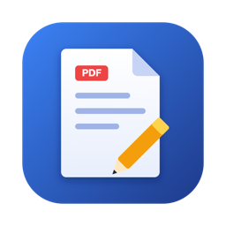
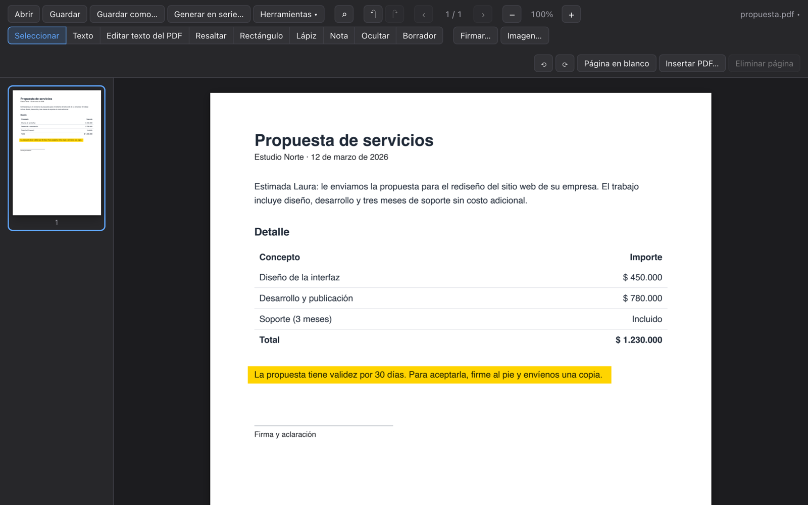

PliegoUn editor de PDF completo, gratis y de código abierto. Funciona sin internet: tus documentos nunca salen de tu computadora.
¿Primera vez? Mira cómo instalarlo. Todas las versiones están en GitHub.

Las páginas web de PDF suben tus documentos a sus servidores. Pliego los procesa en tu computadora.
En un avión, en la oficina sin red o con datos privados: no necesita conexión.
Sin cantidad máxima de archivos, sin suscripción y sin sellos en tus documentos.
Las herramientas de los editores de pago, en una app liviana.
Cambia palabras del PDF manteniendo la fuente, el tamaño y el color. Agrega texto nuevo donde quieras.
Dibuja tu firma o usa una imagen, y colócala en cualquier página.
Campos de texto, casillas y listas, que se ven igual en cualquier otro lector.
Resaltado, subrayado, tachado, notas adhesivas, rectángulos y lápiz libre.
Lo que tapas se borra del archivo, no solo se cubre. Busca un dato y ocúltalo en todas las páginas.
Une PDFs, rota, elimina, extrae y divide páginas. Agrega páginas en blanco.
Exporta a Word o a imágenes, y crea un PDF a partir de fotos.
Protege con cifrado AES-256 y reduce el tamaño de PDFs pesados.
Certificados, constancias o etiquetas desde una planilla de Excel o CSV, con códigos QR incluidos.
Como es un proyecto gratuito, todavía no tiene certificado de firma pago. Por eso tu sistema muestra un aviso la primera vez. Es normal y pasa una sola vez.
Sí. Todas sus funciones son gratis, sin suscripción, publicidad ni marcas de agua. El código es abierto bajo la licencia GPL-3.0.
No. Todo se procesa en tu computadora. La app no envía tus archivos a ningún servidor.
Windows y macOS muestran ese aviso con las apps que no tienen un certificado de firma, que cuesta dinero cada año. El código está publicado en GitHub para que cualquiera pueda revisarlo.
Sí, puedes verlos, anotarlos, firmarlos y organizarlos. Lo que todavía no puede hacer es reconocer el texto de una imagen escaneada (OCR).
Sí. Haz clic derecho en un PDF, elige «Abrir con» y selecciona Pliego. Puedes marcarlo como app predeterminada.
En la sección Issues de GitHub. Si sabes programar, también puedes proponer cambios.